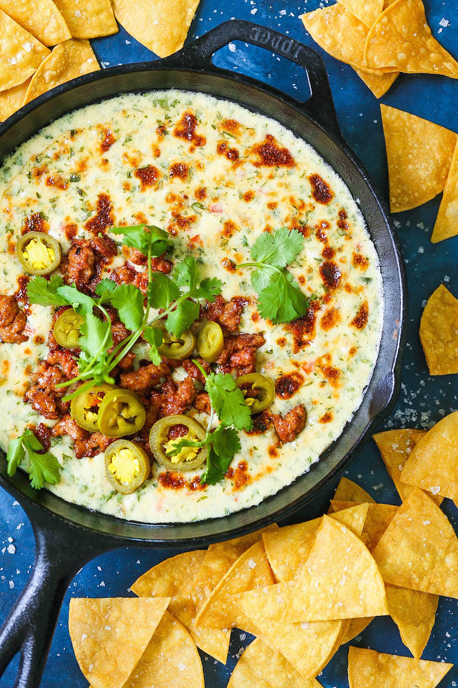

Chorizo con Queso

Description:
A creamy crowd-pleasing queso dip with chorizo. Perfect for game night!
Ingredients:
- fresh chorizo or spicy sausage
- garlic
- sweet onion
- poblano pepper
- flour
- milk
- Roma tomato
- Monterey Jack cheese
- Pepper Jack cheese
- jalapeno peppers
- cilantro